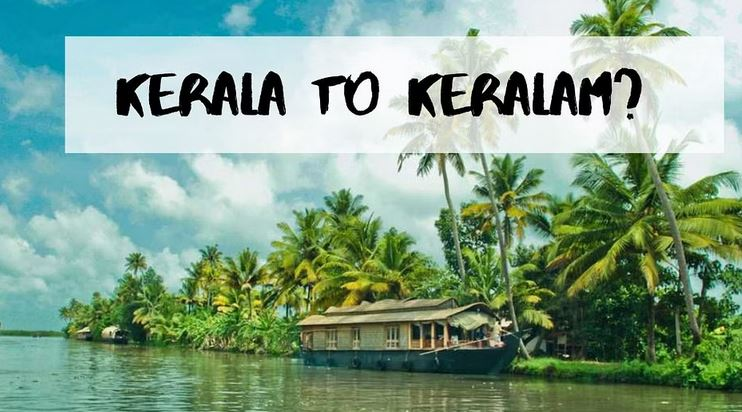

KERALA
Caressed by the Arabian Sea and Western Ghats, Kerala has 14 districts, each with its unique tourist destinations...
KNOW MORE ABOUT DISTRICTS OF KERALA
Click the District to view details
It is the capital city of Kerala and is known for its historic landmarks...
One of the premier trade capitals of the Old World, Kollam is the centre of the country’s cashew trading and processing industry. The district’s Ashtamudi lake is the gateway to the magnificent backwaters of Kerala. The eight-hour boat trip between Kollam and Alappuzha is the longest and most enchanting experience on the backwaters of Kerala. The momentous decision to introduce a new Malayalam era was convened at Kollam and hence the Malayalam calendar came to be known as kollavarsham. Extolled by Marco Polo and Ibn Batuta in glowing terms, Kollam was once a famous port of international spice trade.

A hilly province of pristine splendour, Pathanamthitta district is hailed as the centre of pilgrim worship in Kerala. Three rivers cross through its terrain comprising lowlands, the midlands and the highlands. Interspersed with temples, rivers, mountain ranges and coconut groves, more than fifty percent of the total area of this region is covered by forests. Pathanamthitta is also home to the unique Aranmula Kannadi - metal mirrors that are meticulously handcrafted - and the Vasthu Vidya Gurukulam, a village which practices the ancient Indian school of architecture.
Alappuzha, famous for its boat races, beaches, marine products and coir industry, is a world renowned backwater tourist destination of India. Kuttanad, Alappuzha backwaters and Alappuzha beach are the must-see tourist attractions in the district. Also well-known as the 'Venice of the East’ because of network of canals and waterways, Alappuzha is a district of immense natural beauty. It is embraced by the Arabian Sea in the west and has a network of lakes, lagoons and freshwater rivers criss-crossing it. Kuttanad is a land of lush paddy fields referred to as the 'Rice Bowl of Kerala' and it is one of the few places in the world where farming is done below sea level.
Located in the Southwest of Kerala is the district of Kottayam, renowned as the "Aksharanagari" or Land of Letters. Kottayam was the first town in India to achieve total literacy, and about four-fifth of the books published in Kerala, come from Kottayam. Sitting in the basin of Meenachil River and Vembanad lake, Kottayam is home to vast stretches of paddy fields, and massive rubber plantations and spice gardens. While tourists who love trekking can climb on Nadukani hills to enjoy the bird’s eye view of the lowlands, others who would love to see the rare species of feathered friends, can flock to Kumarakom Bird Sanctuary. Kottayam is rich in history, literature, tourist locales, and encompasses everything that Kerala is known for.
Idukki, the second largest district of Kerala, with Munnar and Periyar with its pride, the very sound of the district conjures up images of elephants, unending chains of hills and spice-scented plantations. Half of the district is covered by forests and the hill stations have a salubrious climate. When you are in Idukki, go for a glimpse of wildlife at close quarters from the safety of a boat at the Periyar Sanctuary or ride an elephant into the scenic jungle at the Periyar Wildlife Sanctuary, go boating on the Mattupetty and Kundala Dams, meet up with various animals at the Chinnar and Idukki Wildlife Sanctuaries, visit a tea plantation in Munnar or trek to Anamudi, the highest peak south of the Himalayas and many more.
A fascinating mixture of the old and the new, the district comprises many interesting cities including Kochi (Cochin), Ernakulam is the commercial capital of Kerala. One of the finest natural harbours in the world, Kochi, renowned as the 'Queen of the Arabian Sea', was once a major centre for commerce and trade. The British, Arabs, Chinese, Portuguese, Dutch etc., have all come to its shores in search of exotic spices and sandalwood. Even today, Ernakulam continues the tradition of welcoming visitors with its customary warmth and hospitality.
Located in central Kerala, Thrissur is the cultural capital of Kerala. Descending down from the Western Ghats, Thrissur comprises highlands, plains, and seaboard. Historically, Thrissur has played a significant part in fostering cultural relations with rest of the world. Kodungalloor in Thrissur is the place where Jews, Christians and Muslims arrived to Kerala from the West. Cheraman Juma masjid, the oldest mosque in India, is located here. Thrissur district, being the seat of culture, houses the Kerala Kalamandalam, the Kerala Sahitya Academy, the Kerala Lalitakala Academy and the Kerala Sangeeta Nataka Academy. Thrissur is best known for the plethora of poorams, or regional festivals associated with Temples, earning it the title 'Land of Poorams'.
Palakkad is a vast stretch of fertile plains interspersed with hills, rivers, mountain streams and forests and is home to the Silent Valley National Park. A 40-kilometre mountain pass known as the Palakkad gap at the foothills of the Western Ghats, acts as a corridor between Kerala and Tamil Nadu.
Malappuram literally means a land atop hills and the region is enriched by three great rivers flowing through it – the Chaliyar, Kadalundi and the Bharathapuzha. Malappuram has made numerous contributions to the cultural heritage of Kerala. A famous centre for Hindu-Vedic learning and Islamic philosophy, the temples and mosques of this region are well known for their spectacular festivals. Along with historic monuments and diverse natural attractions, a range of cultural and ritual art forms add to its charm as a destination. Malappuram district has a rich and vibrant history.
Kozhikode district in Kerala is one of the most important regions of the Malabar coast. Serene beaches, historic sites, wildlife sanctuaries, rivers and hills make Kozhikode a popular destination. With a legendary seaport, Kozhikode was previously the most crucial region of the Malabar coast. Vasco da Gama landed on its shores in 1498. Once the capital of the influential Zamorins and a prominent trade and commerce centre, the winds of change have swept over this charming coastal land. The whiff of history continues to permeate the lanes, bazaars and business hubs of Kozhikode. Lush green countryside, serene beaches, historic sites, wildlife sanctuaries, rivers and hills make Kozhikode a popular destination.
Located in the north east of Kerala, and at the southern tip of the Deccan plateau, the district of Wayanad explains why Kerala is dubbed the 'God's own country'. Least populous, least urbanised, and largely under forest cover, Wayanad is truly a heaven on earth. Numerous waterfalls, challenging trekking trails, misty hills, massive mountains, dense forests, breathtaking view points, and scenic lakes make Wayanad one of the most sought after destination in India. The Edakkal caves with its 6000 years old rock carvings are yet another spot of attraction that throws light to the history of the region. The indigenous tribes of Wayanad, with their unique age old customs celebrate the oneness of man with nature.
Kannur is a culturally and historically rich district in the north of Kerala. It has long been a port and trade center and has had trade relations with several civilizations including Greeks, Romans and Arabs. It is part of the Western Ghats and hence blessed with many natural treasures. Kannur is dubbed as the City of Looms and Lores, thanks to the flourishing handloom industry and folk art called Theyyam. Theyyamis a ritualistic artform encompassing dance, music and mime, where the artist dons the guise of God. Kannur is believed to have got its name from being the land of Kannan or Krishna. True to the legend there are many famous temples in the region. The district is also famous for many alluring spots of interest including Payyambalam and Muzhuppilangadi beach, Arakkal museum, St. Angelo’s Fort etc. A visit to Kannur will be give a glimpse of the rich cultural tradition unique to Kerala.
The northernmost district of Kerala, Kasaragod is famous for its handlooms and its 293 kilometre long coastline. With its cultural uniqueness, the place is known as the land of gods. Rich in history, Kasaragod is home to the largest and best preserved fort in the State - Bekal. The historic Malik Deenar Mosque and the unique Ananthapura Lake Temple display a variety of styles in traditional architecture. This yesteryear port town of the Kolathiri Rajas abounds in myths and legends and exudes a magical charm with its spectacular art forms of Theyyam and Yakshagana, Poorakkali, Kolkali etc.
God's own Country

About Kerala Tourism
Kerala is a gorgeous South Indian state which has long coastlines and mesmerizing hill stations like Munnar and Alleppey. The country has some exceptional places which can be explored with Kerala tourism. A few top things to do in Kerala are staying in a houseboat, elephant bathing, bird watching, shikara ride, and go for Periyar jeep ride. The culture of Kerala is influenced by Davidian culture and Indian culture.
Kerala Travel Guide
- Learn more about the best time to visit Kerala
- Culture of Kerala
- Top Fairs and Festivals in Kerala
- History of Kerala state
- How to reach Kerala
- Kerala Backwaters
- Top 10 Beaches of Kerala
- Hill stations in Kerala

- Kochi
- Munnar
- Alappuzha
- Periyar National Park
- Eravikulam National Park
- Padmanabhaswamy Temple
Some destinations in Kerala include:
- The word "Kerala" means "land of coconuts".
- Kerala has the highest sex ratio and life expectancy in India.
- The state is home to rainforests, hills, valleys, waterfalls, and beaches.
- Kerala is sometimes referred to as the "land of elephants".
- Kerala was formed in 1956 by combining Malayalam-speaking regions.
- The capital of Kerala is Thiruvananthapuram, but Kochi is considered the commercial and financial capital.
Here are some other facts about Kerala:
![Web Result Image]()
Which part of Kerala is most beautiful?
Alleppey.
It's definitely one of the most beautiful places to visit in Kerala that is nestled between backwaters and the Arabian Sea. With postcard-like backwaters and surreal islands, Alleppey is a must-visit for all.
What is best time to visit Kerala?
Winter season between September to March is the best time to visit Kerala. This is the time when Kerala has a comfortable climate and pleasant weather with less humidity. If you wish to explore the enchanting lagoons, tranquil canals and spicy plantations of Kerala's amazing cities, winter is the perfect time for you.